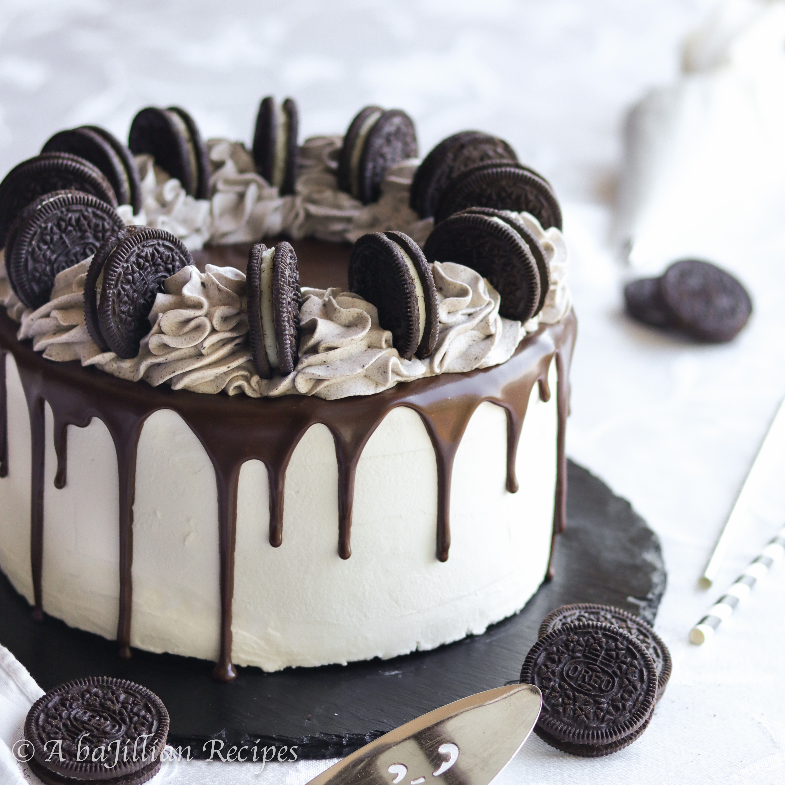

Orea Ice Cream Cake Description
The perfect sweet treat for the summer, this Ice Cream Cake is so easy to make! Enjoy this cake all summer long!
Ingredients
- 1½ quarts ice cream slightly softened
- 8" chocolate cake layer
- 14 Oreos
- 1 cup hot fudge sauce room temp
- 1 pint heavy whipping cream
- 3 tbsp powdered sugar
- 2 tsp vanilla extract
Steps
- Line an 8-inch cake pan with plastic wrap. Use an ice cream scoop to transfer all the ice cream to your lined cake pan. Cover with another layer of plastic, then press down into a flat layer and freeze.
- Prepare the 8-inch chocolate cake layer. You can use my favorite chocolate cake recipe and freeze the two extra layers or a box mix.
- Once the ice cream layer is very hard, and the cake is cooled, place the cake on a serving plate or cardboard round. Cover the top with the fudge sauce, then sprinkle the chopped cookies on top. Remove the ice cream layer from the freezer and place it on top. Cover in plastic and place in the freezer while you make the whipped cream
- Combine cold whipping cream, sugar, and vanilla in the bowl of your mixer fitted with a whisk attachment, you can use an electric hand mixer if desired, and mix starting on low. Gradually increase speed to high and mix until very soft peaks form. Whisk by hand until the peaks firm up but make sure not to over-whip the cream as it will curdle.
- Remove cake from freezer and cover with whipped cream. Smooth the top and side, then transfer the remaining whipped cream to a piping bag fitted with a large closed star (846) tip. Pipe a drip of chocolate onto the edge. Use warm fudge or make a simple ganache with 2 parts chocolate to one part cream to pipe a drip onto the top edge, then pipe a scalloped pattern onto the top edge with the reserved whipped cream.
- Press crumbled cookies onto the bottom edge, and the cake is ready to serve. You can store the cake in the freezer until ready to use. Before serving, remove the cake from the freezer and leave it on the counter for about 15 minutes for easier slicing.